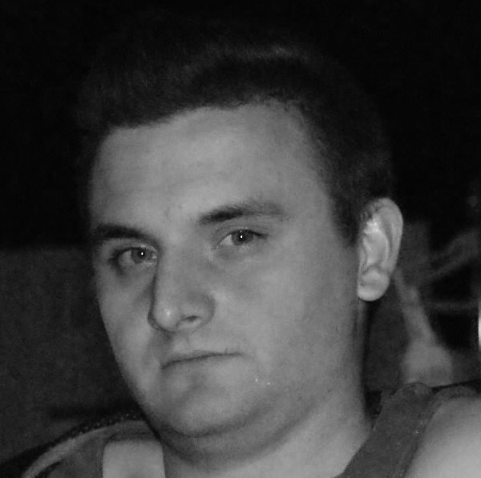
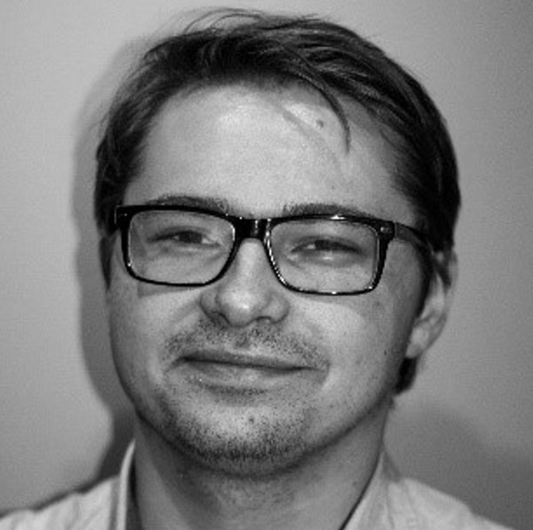
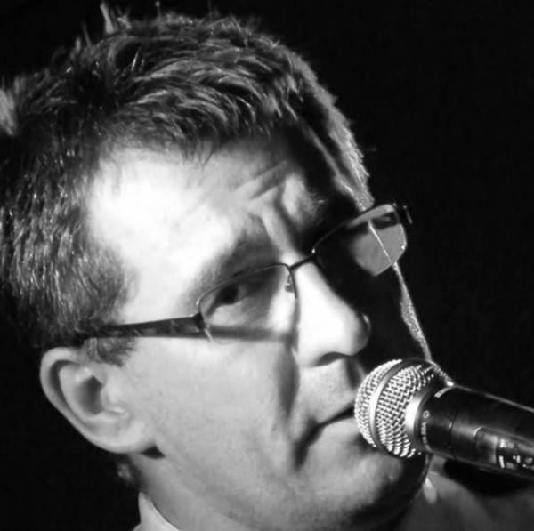

A oficjalnie...
Można zatem już oficjalnie przedstawić Teatr Oddzielny, liczący 27 członków, działający pod Stowarzyszeniem „Arete” w Młodzieżowym Domu Kultury im. Jaworzniaków w Jaworznie. Jest to grupa pasjonatów i adeptów sztuki teatralnej, realizującej nie tylko swoje marzenia, ale i potrzeby środowiska (np. zbieramy pieniądze na hospicja). Grupa ma charakter międzypokoleniowy, a wielkie oddanie i zaangażowanie sceniczne wpływa na coraz wyższy profesjonalizm zespołu.
Twórcą Teatru Oddzielnego jest Anna Korczyk, dyplomowany nauczyciel polonista, obecnie pełniący funkcję instruktora teatralnego w MDK. Anna Korczyk nie tylko jest autorką wystawianych dramatów, tym samym nakreślając kierunek artystyczny teatru, ale także pełni społeczną funkcję dyrektora teatru.
Osobą współodpowiedzialną za stronę muzyczno-artystyczną oraz zastępcą dyrektora teatru jest Dariusz Łętowski, obecnie student Studium Pedagogicznego na Politechnice Krakowskiej oraz student 3. roku Technologii Żywności na Uniwersytecie Rolniczym w Krakowie, pracujący jako Menedżer ds. projektów i od lat znany w środowisku jako wokalista.
Marketingiem społecznościowym oraz social media zajmuje się skromny twórca tej strony Kajetan Bystry, prywatnie od wielu lat pasjonat sceny teatralnej i aktor amatorski, a zawodowo programista stron internetowych.
Menedżerem zespołu jest Krzysztof Gręźlikowski, absolwent Górnośląskiej Wyższej Szkoły Handlowej (kierunek - Zarządzanie Firmą) oraz Śląskiej Międzynarodowej Szkoły Handlowej (Inżynieria Finansowa i Bankowość). Do jego obowiązków należy realizacja niniejszego projektu ministerialnego oraz poszukiwanie i przeprowadzanie rozmów ze sponsorami odnośnie innych spektakli.
Osobowość prawną Teatr Oddzielny uzyskał dzięki Stowarzyszeniu Arete, działającym przy MDK, a prowadzonym przez Grzegorza Gołasa, który jest od 6 lat zatrudniony w MDK jako akustyk i odpowiada za techniczną realizację każdego spektaklu.
Obecnie zespół pracuje nad takimi autorskimi spektaklami, jak: „Przepraszam, nie przeszkadzam”„, „Nie czas na umieranie”„, „Nie zginęła”„, „Warianty”„ oraz „Porażenie”„, które nie tylko będą bawić, ale i prowokować do refleksji egzystencjalnej, tak zaniedbywanej ostatnio w popkulturze.